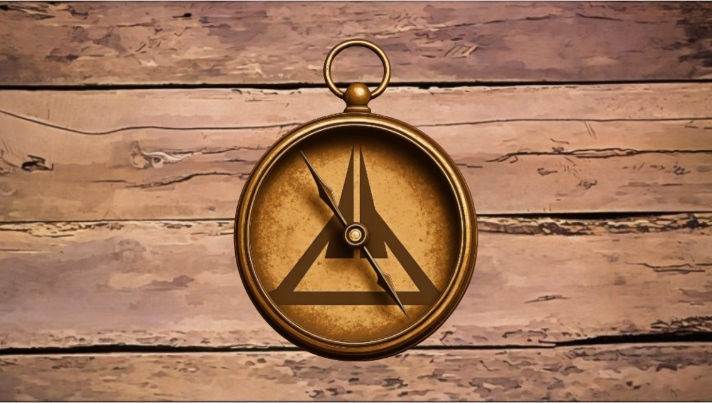
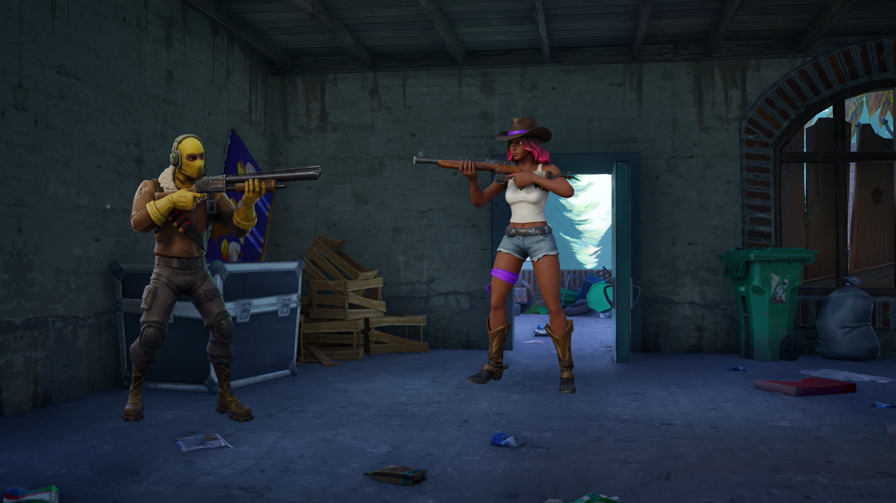
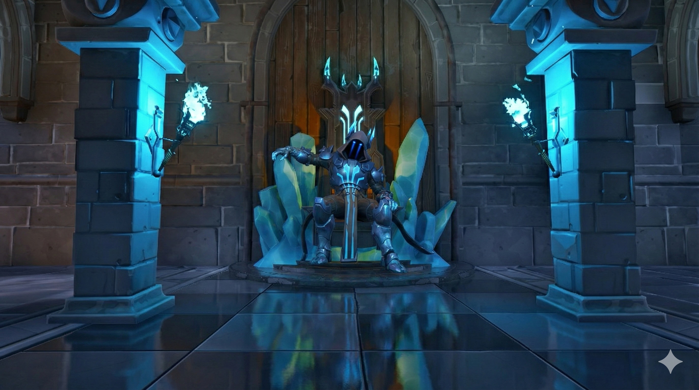
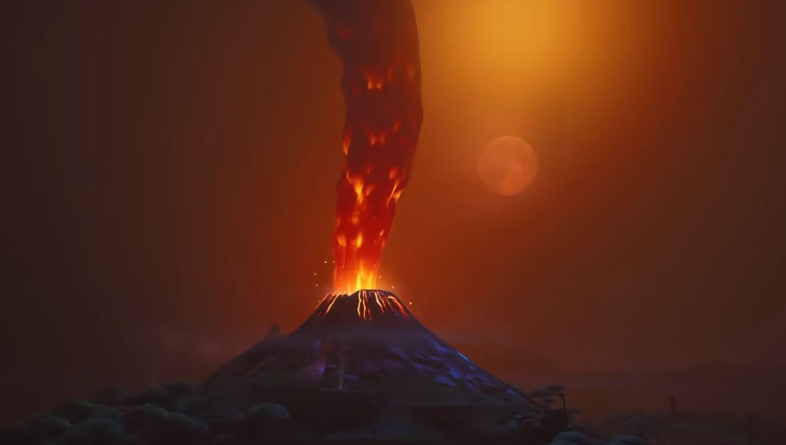
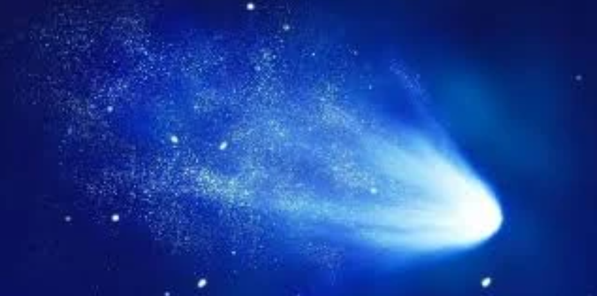
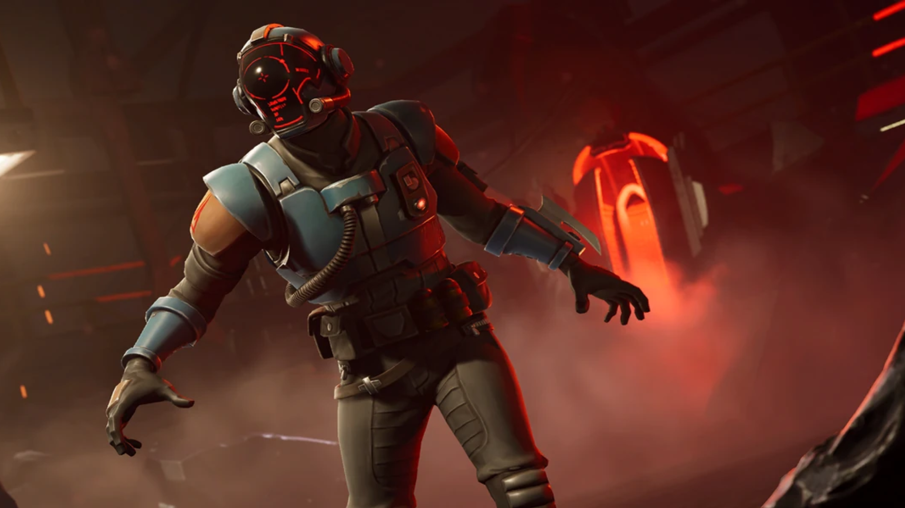
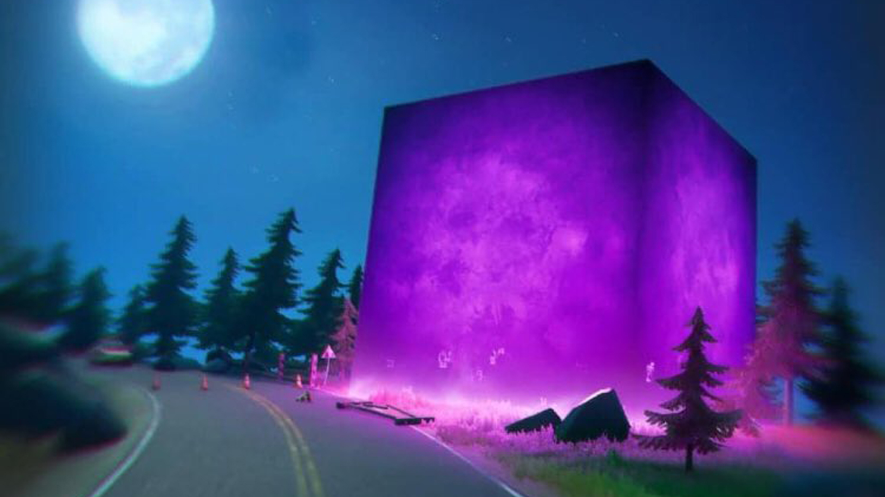
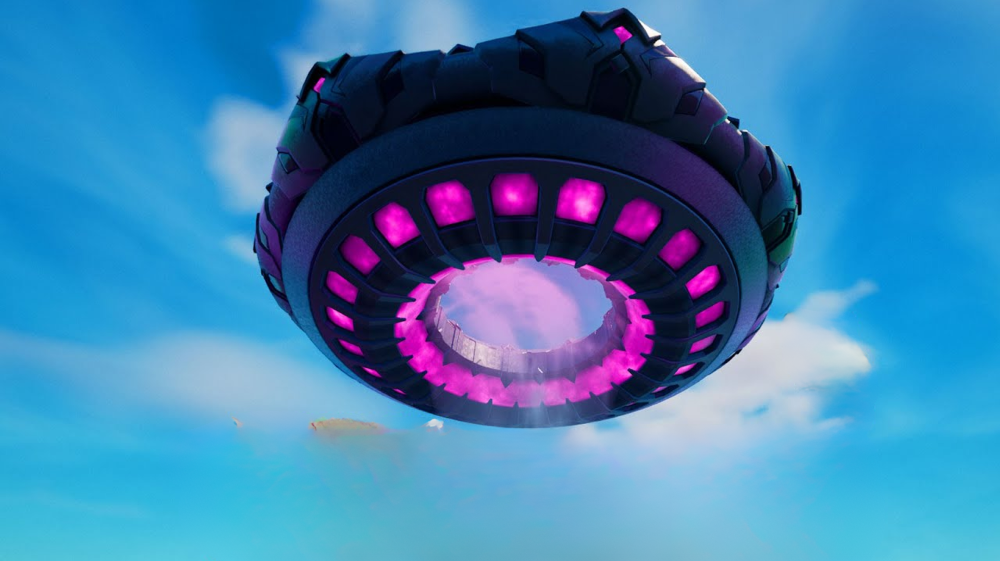
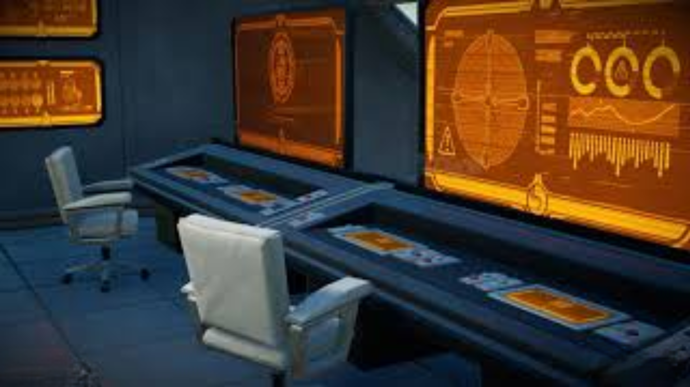
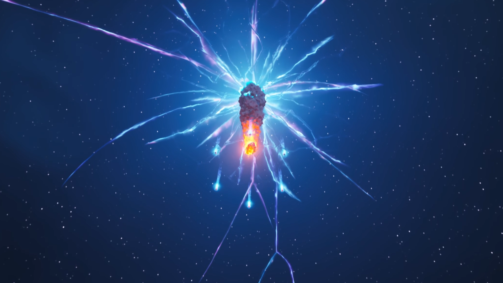

Orion
// Archives Classifiées - Tome 1

L'Amulette Vibrante
Dans la décharge d'Orion, Barret découvre une amulette étrange marquée d'un symbole triangulaire. L'objet vibre d'une énergie inconnue. Il la montre à Raptor, qui reconnaît le logo d'un groupe terroriste combattu jadis. Scarlet révèle alors leur secret : ils ne viennent pas de ce monde, mais sont des exilés d'une autre réalité.

L'Alliance de la Ferme
Le trio rencontre Harper, la gardienne de la ferme, qui révèle que son grand-père étudiait une "énergie éternelle" cachée sous l'île. Au même moment, un iceberg titanesque percute la côte, marquant le début de l'invasion.

L'Ultimatum Boréal
Le Roi des Glaces menace de geler l'île. Le groupe file à Tilted Towers chercher Lucie, l'amie de Harper. Experte en reliques, elle confie avoir infiltré l'Institut Onirique et confirme que le Point Zéro est la cible.

La Chute des Monarques
Le Maître du Feu fait jaillir un volcan. Une guerre apocalyptique éclate et Tilted Towers est pulvérisée. Les deux monarques s'entretuent et Denver, le frère de Lucie, disparaît dans les décombres.

Neo Tilted & Le Météore
Neo Tilted sort de terre, dirigée par Singularité. Mais la paix est brisée lorsqu'un météore artificiel frappe Ideal Factories. L'Institut décrète la loi martiale, cachant au public la capsule alien à l'intérieur.

La Fuite du Visiteur
Bravant le couvre-feu, Barret, Harper et Lucie s'infiltrent dans la base provisoire du cratère. Ils voient le Visiteur s'échapper et réalisent qu'il porte le même symbole que l'amulette. Il n'est pas un ennemi, mais une clé.

La Marche du Cube
Un immense Cube Violet apparaît. Le groupe braque l'armurerie de Retail Row pour s'équiper. Le Cube fond dans le Lac Indigo, créant une anomalie gravitationnelle et une île flottante.

L'Invasion Dimensionnelle
Le ciel s'obscurcit. Le Commandant Kiméra arrive avec son Vaisseau-Mère. Singularité est enlevée et tuée. Les défenses de l'Institut tombent. C'est le chaos total sur l'île.

L'Infiltration de la Base Souterraine
Alors que les aliens ravagent la surface, le Clan du Soleil joue son va-tout. Utilisant les plans volés par Lucie, ils s'infiltrent dans la véritable Base Souterraine de l'Institut Onirique. Profitant de la panique des gardes, ils descendent dans les entrailles de l'île.

La Fin
Le plan du Visiteur s'active. Les fusées des Sept guident le météore sur le Point Zéro exposé. L'impact crée une singularité qui aspire tout : l'Institut, les Aliens, et le Clan du Soleil. L'écran s'éteint.